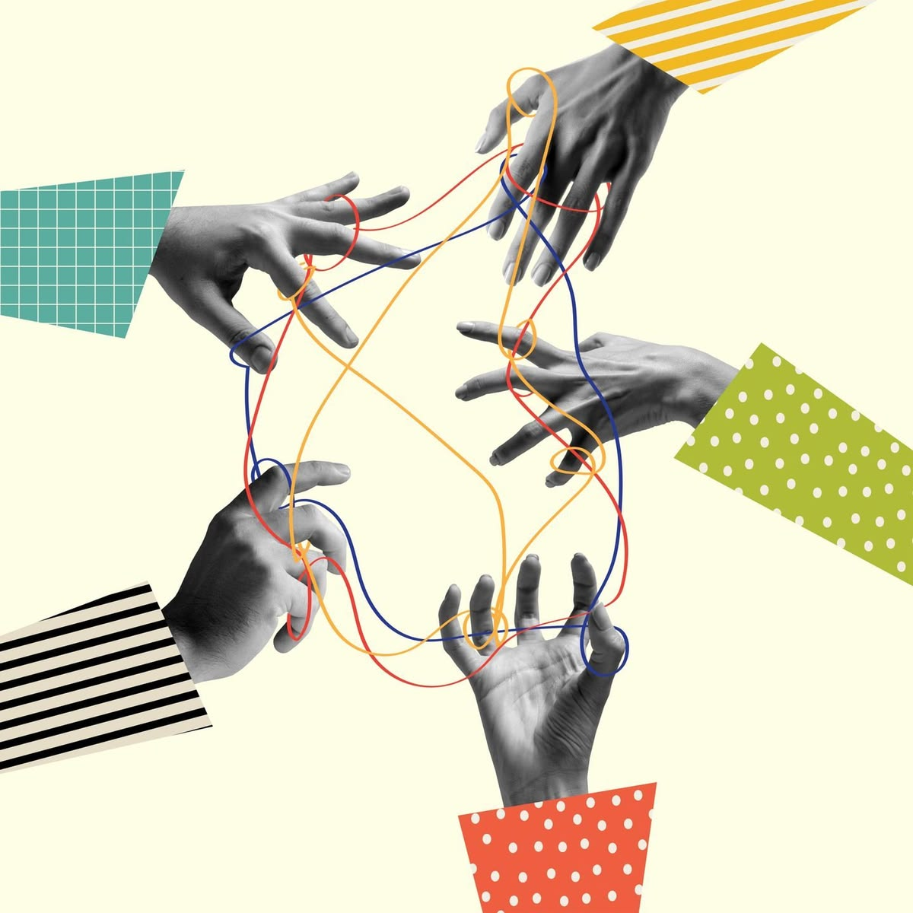

(Het web is van ons allemaal)
Digitaal recht voor iedereen
Ik weiger te accepteren dat we in deze tijd nog steeds mensen buitensluiten. We doen tegenwoordig bijna alles online. We bankieren, shoppen, maken ons huiswerk en houden contact met vrienden via het internet. Je zou denken dat de digitale wereld voor iedereen eerlijk en toegankelijk is. Maar helaas is de realiteit vaak keihard anders. Gelijke rechten op het web zijn nu belangrijker dan ooit. Hoe zorgen we ervoor dat niemand digitaal buitengesloten wordt?
Denk er eens goed over na. Wat als je blind bent en een website gewoon niet wordt voorgelezen door je telefoon? Of als je doof bent en een video geen ondertiteling heeft? Dan kun je gewoon niet meedoen. Dat is super irritant en gewoonweg oneerlijk. Gelijke rechten betekenen dat iedereen, ook met een beperking, zelfstandig zijn of haar ding moet kunnen doen. De overheid verplicht dit al voor hun eigen sites, maar webshops en grote bedrijven moeten nu echt wakker worden en volgen. Het gaat niet alleen om hoe een site eruitziet, maar ook om wat er achter de schermen gebeurt. Een knop moet bijvoorbeeld ook werken met een toetsenbord in plaats van een muis.
Geen plek voor algoritmes met vooroordelen
En dan heb ik het nog niet eens over algoritmes en AI. Die bepalen tegenwoordig superveel in ons leven. Wie krijgt een bijbaantje? Wie mag een kamer huren? Welke advertenties zie je? Als zo'n computer is geprogrammeerd met oude vooroordelen, dan discrimineert dat systeem gewoon. Dan krijgt de ene persoon wel een baan en de andere niet, alleen maar door hoe de computer is gemaakt. Wij moeten dus keihard op AI blijven letten, want computers horen juist eerlijk te zijn. Punt. Dit raakt direct aan non-discriminatie en inclusie.
Natuurlijk mag je online je mening delen, maar er is een grens. Bedreigingen, discriminatie en online haat veroorzaken op Insta of TikTok zijn gewoon strafbaar. De regels die op straat gelden, gelden precies hetzelfde achter je scherm. Het internet moet een veilige plek blijven voor iedereen, zonder dat je bang hoeft te zijn voor toxic reacties. En je persoonlijke data? Die zijn van jou. Niet van de computer en niet van een of ander groot bedrijf dat er geld aan wil verdienen. Gegevensbescherming hoort bij gelijke rechten. Je moet zelf kunnen beslissen wat er met jouw informatie gebeurt.
Het web is van ons allemaal

Het web is van ons allemaal. Het moet een veilige plek zijn waar iedereen gelijke kansen krijgt. Ontwikkelaars moeten betere sites bouwen. De overheid moet strenger controleren. Maar wij kunnen zelf ook wat doen.
Zie je online haat? Zie je discriminatie? Zie je sites die mensen buitensluiten? Meld het. Zeg er wat van. Gelijke rechten stoppen niet als je je scherm aanzet. Dat scherm moet juist voor iedereen openstaan. Ik doe mee. Doe jij dat ook?